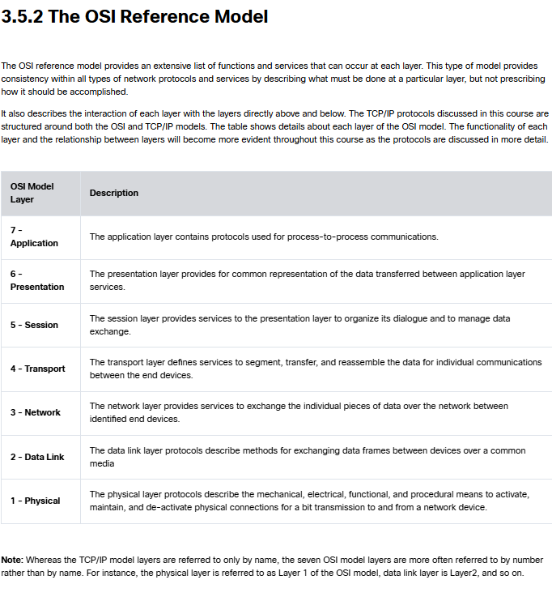
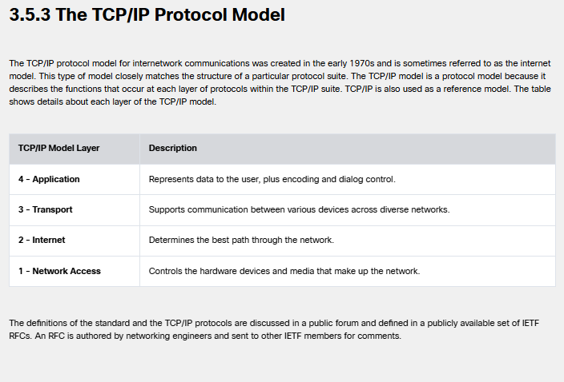
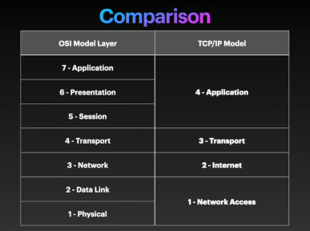

1. Power on the tower- it takes a while to warm up
READ THE INSTRUCTIONS
2. Connect necessary cables to the switch and the computer
READ THE INSTRUCTIONS
a. connect the console cable
b. Get 2 long ethernet cables and 1 short (the cabling will be lab dependent)
c. Visually inspect the cabling.
3. Configure the PC Hosts
READ THE INSTRUCTIONS
a. configure the static IP addresses for the Hosts (PC)
click *windows button* and type "view Network connections"
right click "Ethernet"
click properties
click Internet Protocol version 4(TCP/IPv4)
click properties & set up static IP per the lab
verify IP configs- Search bar- cmd- type *IPconfig* hit enter
check to see if the settings are correct per the lab settings
4. Configure and verify basic switch settings
** Commands for PC-1 to switch-1 **
click on the switch icon in teraferm
hit enter and get started
Press RETURN to get started
Switch>enable *changes to privileged EXEC mode*
Switch#config t *enters global config mode*
Enter configuration commands, one per line. End with CNTL/Z. *cautionary message displayed after you enter global config mode*
Switch(config)#hostname switch *gives the device a name*
Switch(config)#enable **password** *applies a password to privileged EXEC*
Switch(config)#enable secret **password** *applies an encrypted password*
Switch(config)#line console 0 *enters line config*
Switch(config-line)#password **password** *applies the password-this is for user exec mode password*
Switch(config-line)#login *instructs to require a password upon login*
Switch(config-line)#exit *use exit to "exit" each mode*
Switch(config)#line vty 0 15 *16 virtual lines for remote login — 0 to 15*
Switch(config-line)#password **password** *to protect the switch from unwanted telnet access on all incoming lines selected*
Switch(config-line)#login *instructs to require a password upon login*
Switch(config-line)#exit *use exit to "exit" each mode*
Switch(config)#service password-encryption *encrypts the passwords hiding the plain text settings*
Switch(config)#banner motd "Message of the Day"*put an appropriate message here to warn of unauthorized use etc.*
Switch(config)#interface vlan 1 *enters the interface config*
Switch(config-if)#ip address [my IP] *set IP address per lab instructions* 255.255.255.0 (subnet mask will always be this for the duration of this class)
Switch(config-if)#no shutdown *keeps the line up and operational*
Switch(config-if)#
%LINK-3-UPDOWN: Interface Vlan1, changed state to down -
%LINEPROTO-5-UPDOWN: Line protocol on Interface Vlan1, changed state to up *message displayed after you set the no shutdown*
Switch(config-if)#exit *use exit to "exit" each mode*
Switch(config)#exit *use exit to "exit" each mode*
Switch#show run *this will show you the running configuration settings*
Switch#copy running-config startup-config *used to copy the running config from VRAM to NVRAM - short-cut "copy run start"*
Destination filename [startup-config]? *hit enter to continue*
Building configuration...[OK] *informational message displayed after you copy the running config to the startup config*
Switch#exit *exits the privileged EXEC mode and sets you back at the start*



There are 3 settings required for IPv4 configuration:
1. IP address, -The IP address is the unique identifier for the device on the network.
2. Subnet mask, -The subnet mask is used to determine which portion of the IP address represents the network and which portion represents the host.
3. Default gateway, -The default gateway is the IP address of the router that connects the local network to other networks, including the internet.
Ping 127.0.0.1 *Loopback address used to ping local machine to test the OSI and TCP/IP stack on the local machine*
R1# show ip route *Gives you the routing table for the router*
(Three parts= how route was learned: 1. directly connected 2. Remote (Anything not C,L ) 3. Default)